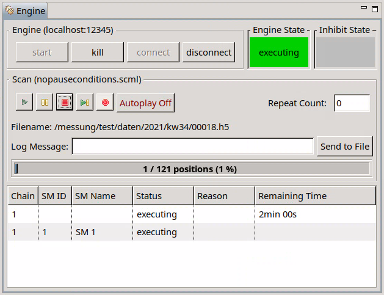
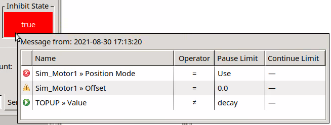

What’s New in EVE Viewer
Version 1.36.0 (2021-11-05)
- [Feature-#5742] The Engine View has a new layout. An engine state indicator shows if the connected engine currently executes a scan (or not). The newly introduced pause conditions are visualized as an inhibit state in the Engine View:

A tooltip shows details (states of the individual pause conditions, if any) of the inhibit state of the currently executing scan:

For older versions, see the What’s New Archive.